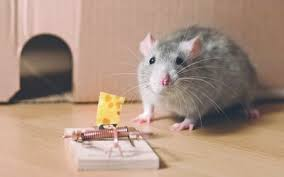

Evolúciójuk Az egérfélék evolúciója sok más kis termetű emlőshöz hasonlóan a leletek hiánya miatt kevéssé ismert. Valószínűleg hörcsögszerű emlősökből fejlődtek ki Ázsiában a miocén kezdetén. Csak ezután kezdtek el terjeszkedni a hűvösebb éghajlatú területek felé. A holocén alatt mindenütt gyakorivá váltak, ami az ember vándorlásaihoz köthető.
